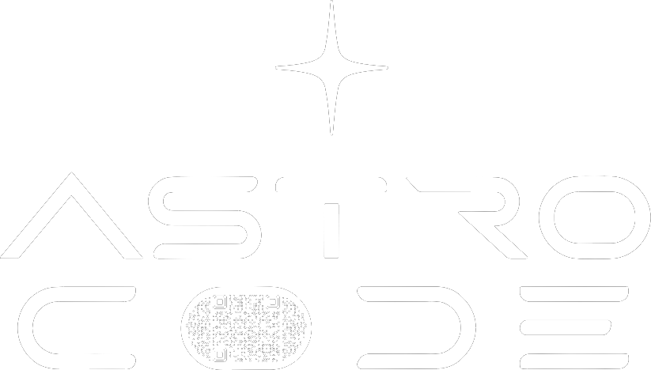
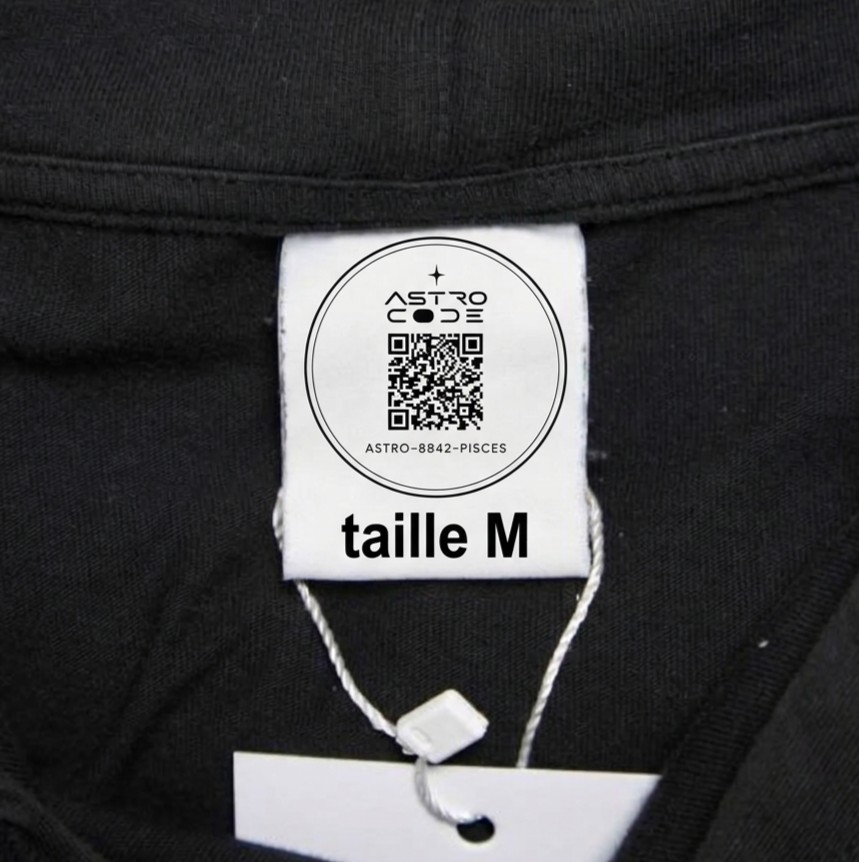

Detection
AI character
AI horoscope
◌
LOOKING UP THE ARTWORK…
ASTRO CODE

Starting the camera…
Tap an unlocked sign to open its card.
The moments you immortalized while scanning. Tap one to view, share or download it.
No memories yet.
While a sign is alive on screen, tap ✦ KEEP A MEMORY —
your souvenir will be waiting for you here.
The imprint is earned: complete all 12 signs to write the line that will appear on your piece at every scan.
🔒 Locked — complete your constellation.
No hoodie yet? Pick one below, go live — and once you're wearing it, just speak to change it: “In red, with a black sign.”
Live rendering bills per second — it stops by itself at 1:30.

Link the wash label of your t-shirt to your number — and secure your unique rewards. Your code is printed on the label, under the QR code.
No hoodie yet? Stay in Guest mode — everything stays open.
Real moments from real wearers. Every post was born from a scan — nothing here was posted from a couch.
500 m radius · collectors nearby
Opening the radar…
🟢 = a wearer who chose to be open to encounters. Nobody is ever shown open by default — privacy first.
GPS and compass calibrate on open — allow location to place wearers around your real position.
Swipe to swim through your constellation.